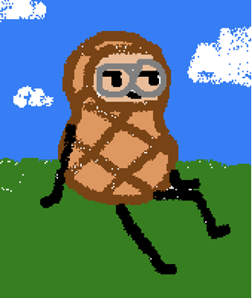

Asher Pez is an office worker who after getting fired from his job finds new ways to cope with the world.The story goes through his adventures as an unemployed male in a difficult capitalist society and the struggles he endures.
NAME: ASHER PEZ
AGE: 22
GENDER: MALE
BIRTHDAY: SEPT. 13, 2004
OCCUPATION: OFFICE WORKER
AGE: 22
GENDER: MALE
BIRTHDAY: SEPT. 13, 2004
OCCUPATION: OFFICE WORKER
